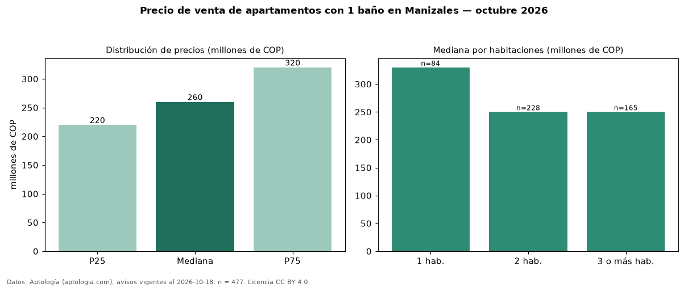

Precio de venta de apartamentos con 1 baño en Manizales — octubre 2026
En Manizales, la mediana de precio de venta de apartamentos con 1 baño es COP 260 millones, según 477 avisos vigentes. Frente a la mediana de todos los apartamentos en venta de Manizales (COP 450 millones, n = 2.824), queda 42 % por debajo; este segmento reúne el 17 % de esos avisos. Por metro cuadrado, la mediana es COP 4,91 millones/m² (n = 470), 13 % por debajo del conjunto de referencia (COP 5,65 millones/m²). El área mediana anunciada es 53 m². El segmento con más oferta es el de 2 habitaciones (228 avisos, mediana COP 250 millones); pasar de 1 habitación a 3 o más habitaciones cambia la mediana −24 %. La administración mediana declarada es COP 173.000 al mes (n = 311). El estrato más frecuente es 3 (40 % de los avisos con estrato). 62 % de los avisos con el dato declara parqueadero. Datos: Aptología (aptologia.com), CC BY 4.0 — https://www.aptologia.com/venta/manizales. Archivos: PDF, CSV con las cifras y gráfica PNG.

| Avisos únicos | 477 |
|---|---|
| Percentil 25 | COP 220.000.000 |
| Mediana | COP 260.000.000 |
| Percentil 75 | COP 320.000.000 |
| Mediana por m² | COP 4.911.163 |
Fuente: avisos vigentes de portales inmobiliarios recopilados por Aptología, deduplicados (mínimo 30 avisos únicos por celda). Precios pedidos, no cerrados. Fecha: 2026-10-18.